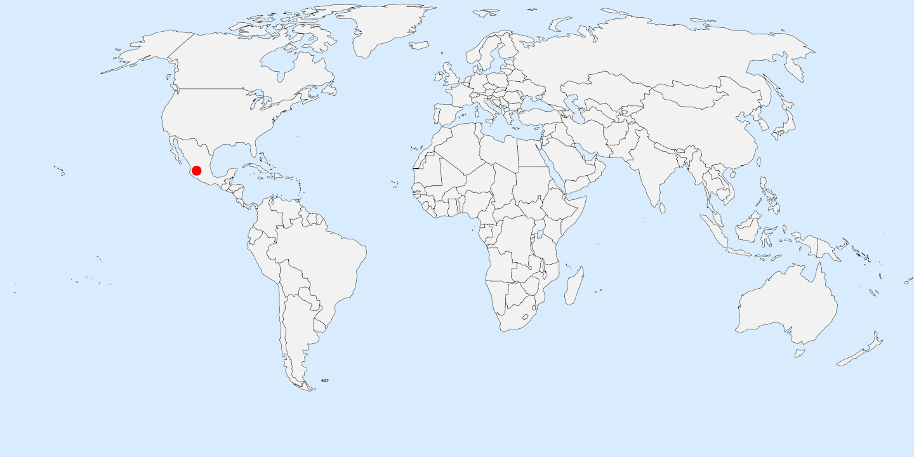
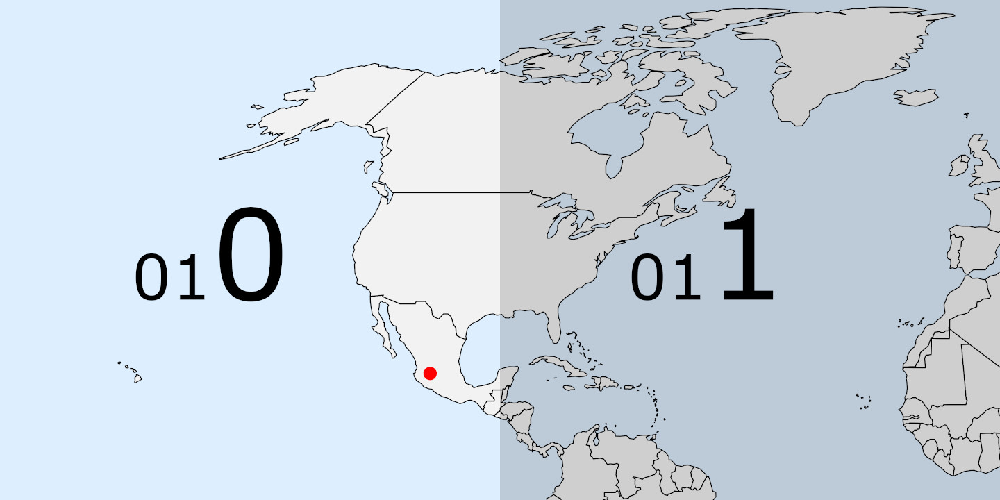
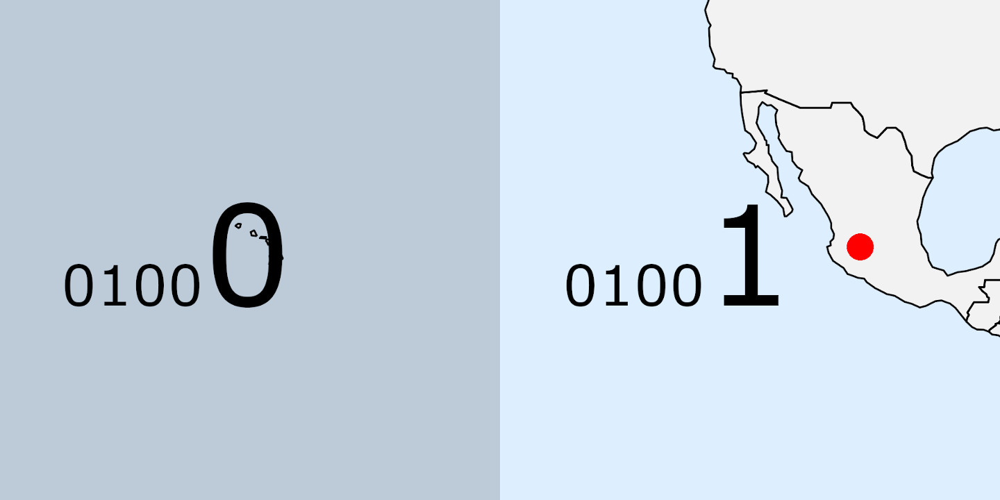

GeoHash
el aguachile del indexado espacial
-- Guillermo Estrada @phrzn
¿Qué es GeoHash?
Primero lo primero...
¿Qué es un hash?
GeoHash
- Es un algoritmo de codificación geográfica de dominio público creado por Gustavo Niemeyer (2008).
- Es una estructura de datos de jerarquía espacial que subdivide el espacio en regiones en forma de cuadrícula.
- Es una de las muchas aplicaciones de las curvas de órden Z y en general de las curvas de llenado de espacio.
Al César lo que és del César...

Go Developer
Parte del equipo de Canonical desde septiembre del 2005. Colaborador de proyectos como Landscape, Juju y Snap.
Otra vez... ¿qué era?
Es el algoritmo de una función hash que consume coordenadas geográficas (latitud, longitud), y produce hashes (cadenas de caracteres) de precisión variable que corresponden a esa ubicación.
¿Cómo por qué requiero precisión?
El algoritmo funciona subdividiendo el "mapa" y codificando la región resultante en una versión modificada de base32 (dígitos del 0 al 9 y el alfabeto en minúsculas, excluyendo [a,i,l,o]). Los geohashes representan regiones de un mapa, y la precisión juega un papel importante en la búsqueda por proximidad.
Ejemplo
Coordenadas: (20.644275, -103.415962)
- 9 (23, -113)
- 9e (19.7, -107)
- 9ew (20.4, -103.4)
- 9ewm (20.65, -103.54)
- 9ewmq (20.632, -103.425)
- 9ewmqw (20.6461, -103.42)
- 9ewmqwn (20.644, -103.4164)
Algoritmo
Comenzamos con las coordenadas que queremos codificar. (20.644275, -103.415962)
 Mapa cortesía de: https://simplemaps.com/resources/svg-worldPartimos el mapa en 2 por su longitud y tomamos la región que corresponde. 0 si es menor y 1 si es mayor.

Ahora partimos la sección por su latitud y tomamos región la que corresponde. 0 si es menor y 1 si es mayor.

Repetimos el algoritmo con la siguiente sección por longitud. (bits pares [0, 2, 4, 6, 8, ... ])
Y una vez más por latitud. (bits impares [1, 3, 5, 7, 9, ... ])

Con una última vez por su longitud juntamos 5 bits.
Y codificamos esos 5 bits en base32.

| 9 | e | w | m | q | w | n |
| 01001 | 01101 | 11100 | 10011 | 10110 | 11100 | 10100 |
Aproximadamente: ( 20.644 , -103.4164 )
Cada 5 bits nos dan un símbolo extra en base32 y mayor precisión.| Length | Cell width | Cell height |
|---|---|---|
| 1 | ≤ 5,000km | 5,000km |
| 2 | ≤ 1,250km | 625km |
| 3 | ≤ 156km | 156km |
| 4 | ≤ 39.1km | 19.5km |
| 5 | ≤ 4.89km | 4.89km |
| 6 | ≤ 1.22km | 0.61km |
| 7 | ≤ 153m | 153m |
| 8 | ≤ 38.2m | 19.1m |
| 9 | ≤ 4.77m | 4.77m |
| 10 | ≤ 1.19m | 0.596m |
| 11 | ≤ 149mm | 149mm |
| 12 | ≤ 37.2mm | 18.6mm |
Fuente: https://www.movable-type.co.uk/scripts/geohash.html
¿Por qué usar GeoHash?
¡Véndemelo!
- Elegante y fácil de implementar
- Tamaño y eficiencia
- Búsqueda e indexado espacial
- Fácil de adaptar y compartir
Lugares cercanos
| Luxoft | 9ewmqwnv9 |
| Phillip Morris - Cigatam | 9ewmqws1p |
| Estadio Akron | 9ewmtthck |
| La Minerva | 9ewmx7et7 |
| Catedral de Guadalajara | 9ewt8k1h8 |
| Aeropuerto Miguel Hidalgo | 9ewsc29cj |
| Malecón de Chapala | 9ewe7v4j0 |
Regiones

¿y la famosa curva de órden-Z?

Problemas y soluciones
¿No que éramos vecinos?

La piedra en el zapato
- Búsqueda por región no siempre confiable
- Dimensiones variables de la cuadrícula
Photo by Matthew Hamilton on Unsplash
Y luego, ¿qué hago?
Photo by Nina Strehl on Unsplash
Búsqueda de vecinos (regiones adyacentes) por precisión variable.
| 9ewmt | 9ewmw | 9ewmx |
| 9ewmm | 9ewmq | 9ewmr |
| 9ewmj | 9ewmn | 9ewmp |
Eficiente búsqueda espacial por proximidad con bases de datos.
Alfombra roja
- Redis
- MongoDB
- Elasticsearch
- HBase
- Accumulo
Demo
JS Demo with Mapbox, Vue.js, Pure CSS and AxiosImplementación del algoritmo
en
Requisitos
- Ubicación
- Región
- Centro
- Funciones
- Codificar
- Decodificar
- Encontrar Vecinos
Estructuras
type Location struct {
lat, lon float64
}
type Region struct {
min, max Location
}
func (r Region) Center() Location {
return NewLocation(
(r.min.lat+r.max.lat)/2,
(r.min.lon+r.max.lon)/2
)
}
Funciones
func Encode(latitude, longitude float64, precision int) string {
...
}
func Decode(geohash string) Region {
...
}
func Neighbours(geohash string) map[string]string {
...
}
func Validate(geohash string) bool {
...
}
Servidor
Construiremos una API para una key/value store basada en geohash.
GET /:geohash
POST /:geohash
GET /:geohash/region
GET /:geohash/neighbours
OPTIONS /:geohash*
-------------------------------
PUT /:geohash
DELETE /:geohash